Vorlauf ist das Brennbuch für Abfindungs-, Lohn- und Kleinbrennereien und Stoffbesitzer. Du legst die Maische an, protokollierst die Gärung, hältst beim Brand jede Vorlage fest und siehst Herz, Durchschnittsstärke und reinen Alkohol sofort. Vorlauf rechnet mit den internationalen Alkoholtafeln: Alkoholmeter-Ablesungen auf 20 °C und das Herabsetzen auf Trinkstärke mit Kontraktion – so stimmt die Flasche am Ende.
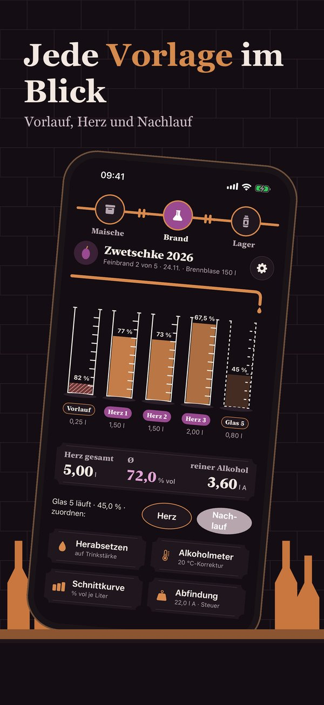
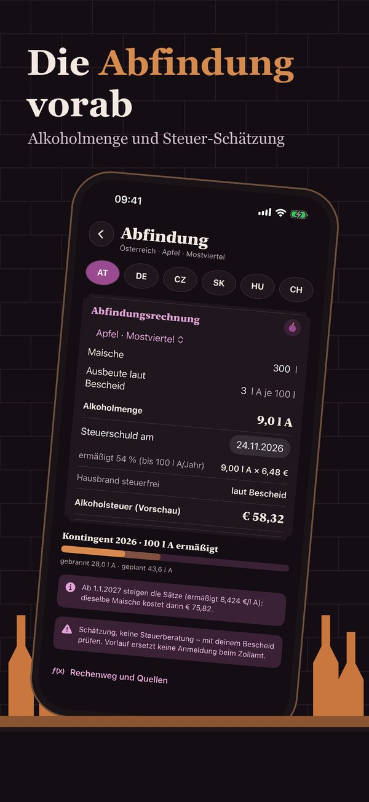
Maischen mit Obst, Menge, Ansatz und Gärverlauf
Gärkontrolle mit Erinnerung, Brix und Temperatur
Vorlagen beim Brand: Vorlauf, Herz, Nachlauf mit Liter und % vol
Herabsetzen auf Trinkstärke mit Kontraktion und Flaschenzahl
Alkoholmeter-Ablesung auf 20 °C umrechnen
Abfindungsrechnung und Steuer-Vorschau (Österreich), eigene Sätze für andere Länder
Lager mit Losen und Flaschen, Etiketten als PDF
Brennbuch der Saison als PDF und CSV, auf deinem iPhone gespeichert
Vorlauf je deník pro pěstitele, kteří pálí v licencované pěstitelské pálenici. Založíš kvas, zapisuješ kvašení, u pálení zaznamenáš každou jímku a hned vidíš jádro, průměrnou sílu a čistý líh. Vorlauf počítá podle mezinárodních lihových tabulek: odečet lihoměru na 20 °C a ředění na pitnou sílu s kontrakcí.
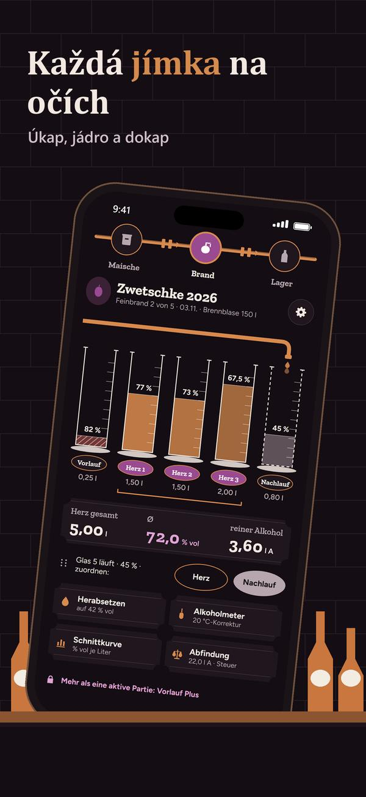
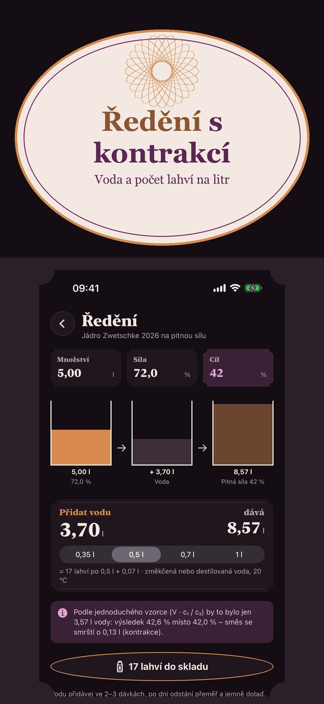
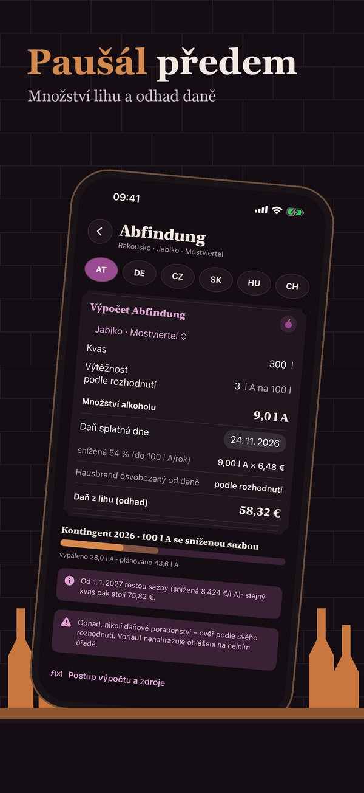
Kvasy s ovocem, množstvím, datem a průběhem kvašení
Kontrola kvašení s připomínkou, Brix a teplotou
Jímky při pálení: úkap, jádro, dokap v litrech a % obj.
Ředění na pitnou sílu s kontrakcí a počtem lahví
Přepočet lihoměru na 20 °C
Rakouský výpočet paušálu a vlastní sazby pro další země
Vorlauf je denník pre pestovateľov, ktorí pália v licencovanej pestovateľskej pálenici. Založíš kvas, zapisuješ kvasenie, pri pálení zaznamenáš každú nádobu a hneď vidíš jadro, priemernú silu a čistý lieh. Vorlauf počíta podľa medzinárodných liehových tabuliek: odpočet liehomeru na 20 °C a riedenie na pitnú silu s kontrakciou.
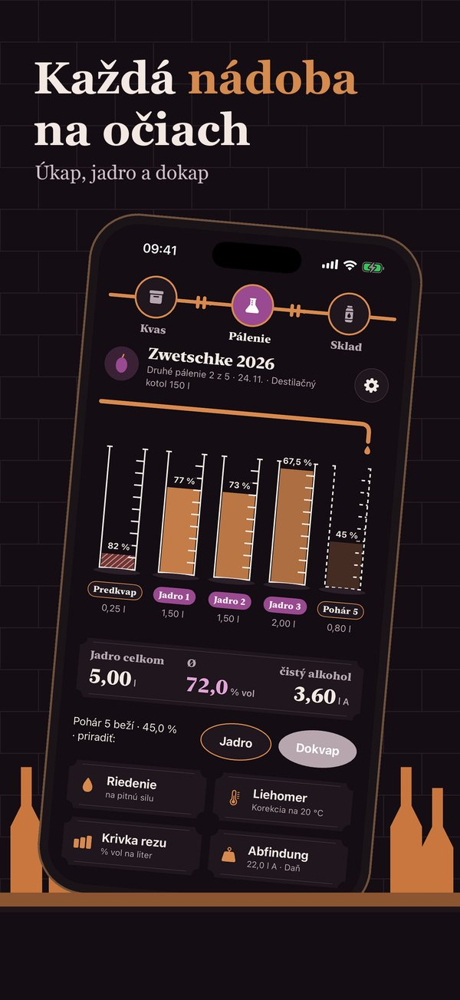
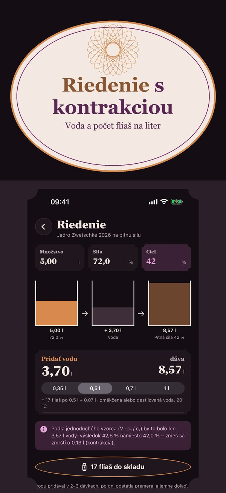
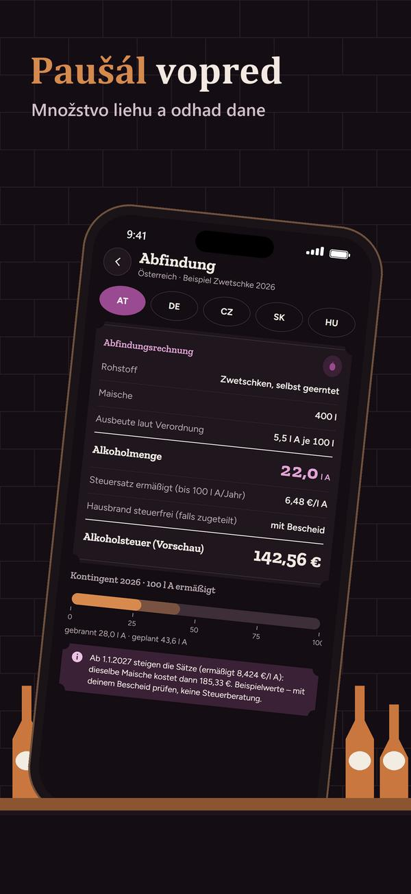
Kvasy s ovocím, množstvom, dátumom a priebehom kvasenia
Kontrola kvasenia s pripomienkou, Brix a teplotou
Nádoby pri pálení: úkap, jadro, dokap v litroch a % obj.
Riedenie na pitnú silu s kontrakciou a počtom fliaš
Prepočet liehomeru na 20 °C
Rakúsky výpočet paušálu a vlastné sadzby pre ďalšie krajiny
A Vorlauf napló azoknak, akik bérfőzdében vagy engedéllyel főznek. Felveszed a cefrét, vezeted az erjedést, főzéskor rögzíted minden szedőedényt, és azonnal látod a középpárlatot, az átlagos erősséget és a tiszta szeszt. A Vorlauf a nemzetközi alkoholtáblázatok szerint számol: alkoholmérő-leolvasás 20 °C-ra és hígítás kontrakcióval.
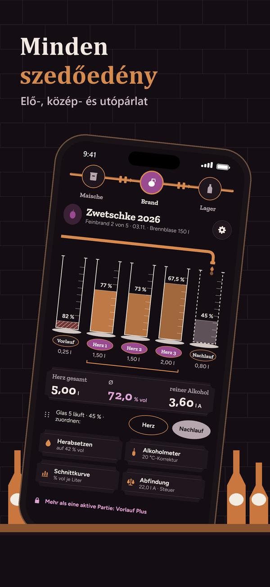
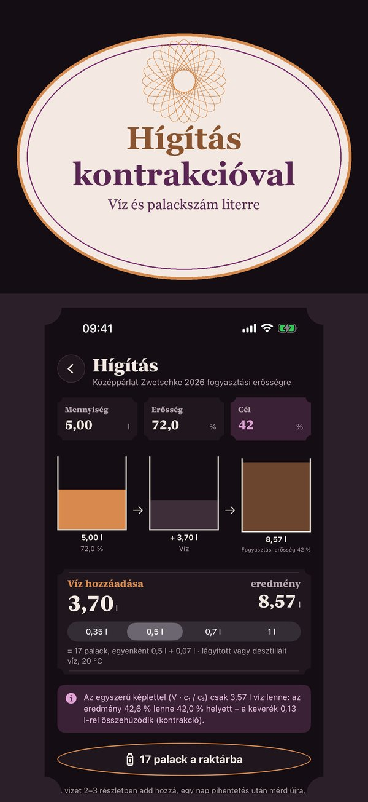
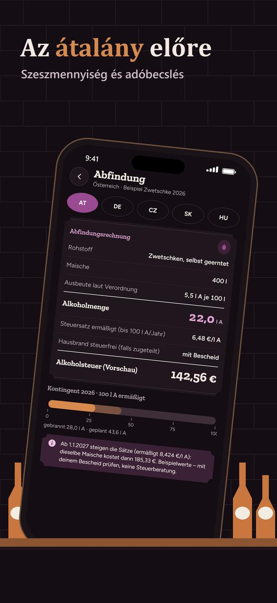
Cefrék gyümölccsel, mennyiséggel, dátummal és erjedéssel
Erjedésellenőrzés emlékeztetővel, Brix és hőmérséklet
Szedőedények: elő-, közép- és utópárlat literben és % vol-ban
Hígítás fogyasztási erősségre kontrakcióval és palackszámmal
Alkoholmérő-leolvasás 20 °C-ra
Osztrák átalány-számítás és saját kulcsok más országokra
Raktár tételekkel és palackokkal, címkék PDF-ben
A szezon naplója PDF-ben és CSV-ben, az iPhone-on tárolva